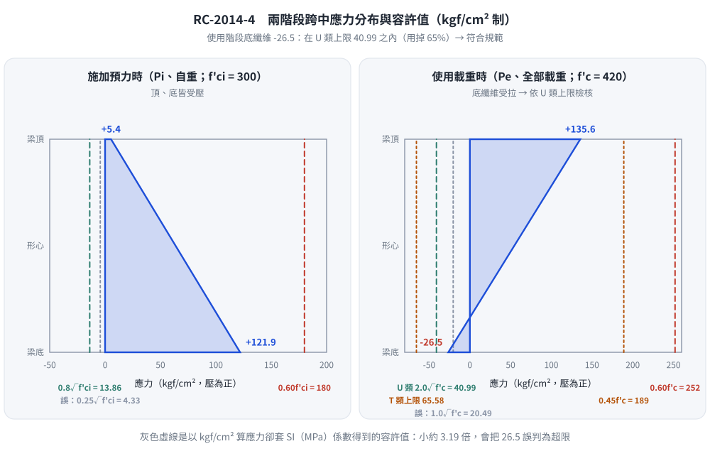

📄 題目正本：考卷原文・附圖・判讀清單（已確認）
RC-2014-4 題目正本
本檔只記錄考卷上寫了什麼、圖上畫了什麼，不含任何解法。解析見同資料夾
RC-2014-4.md。
判讀清單已經使用者確認（凍結）；本檔原則上不再修改（改動須回考卷原圖並記 log）。
| 項目 | 內容 |
|---|---|
| 考卷 | raw/exams/RC-2014_鋼筋混凝土設計與預力.pdf 第 1 頁（全一頁），第四題 |
| 考年 | 民國 103 年（2014） |
| 配分 | 25 分 |
| 附圖 | 無（本題無附圖） |
| 判讀狀態 | 已確認（2026-11-14 使用者確認；影響答案項目使用者選擇：#1 S 依 I_c/c 修正為 1.563×10⁴ cm³；#4 工作載重 1.1 tf/m 為自重以外的外加載重（合計 1.364 tf/m）；轉錄 2026-11-14；PyMuPDF 110 dpi 目視＋抽出文字核對，$S$ 的指數 300 dpi 放大確認；盲讀後才比對既有解析） |
1. 考卷原文（逐字）
四、一簡支對稱 I 形、U 類型預力梁，跨距 12 $m$，$I_c$=4.69×10⁵ $cm^4$，$Ac$=1100 $cm^2$，$r^2$=426 $cm^2$，$S$=15.63×10⁴ $cm^3$，自重=0.264 $tf/m$，工作載重為 1.1 $tf/m$，偏心距固定且 $e$=19.8 $cm$，$c_1$=$c_2$=30 $cm$，施加預力 $P_i$=70 $tf$，預力損失後 $P_e$=60 $tf$，$f'_c$=420 $kgf/cm^2$，施加預力時 $f'_{ci}$=300 $kgf/cm^2$，試求在梁中點處於上述 2 階段之應力值並確認是否符合規範規定。（25 分）
2. 考卷給的公式、附表與參數
- 題文數值：跨距 12 m；$I_c=4.69\times10^5$ cm⁴、$A_c=1{,}100$ cm²、$r^2=426$ cm²、$S=15.63\times10^4$ cm³（照錄）；自重 0.264 tf/m；工作載重 1.1 tf/m；$e=19.8$ cm（固定）；$c_1=c_2=30$ cm；$P_i=70$、$P_e=60$ tf；$f'_c=420$、$f'_{ci}=300$ kgf/cm²。
- 卷首作答規範：「本科目試題之作答規範：中國土木水利工程學會『混凝土工程設計規範』（土木 401-100），未依規範作答，不予計分。」
- 卷首「可能使用之公式，但不限於」：$\phi = 0.65+(\varepsilon_t-0.002)(0.25/0.003)$、$E_s=2.04\times10^6$、$E_c=15000\sqrt{f'_c}$、$V_c=0.53\sqrt{f'_c}b_wd$、$V_c=(0.50\sqrt{f'_c}+175\rho_w V_ud/M_u)b_wd \le 0.93\sqrt{f'_c}b_wd$、$M_m = M_u - N_u(4h-d)/8$、$\beta_1 = 0.85-0.05(f'_c-280)/70$ 且 $0.65 \le \beta_1 \le 0.85$（皆非本題專用）。
- 沒有給：容許應力數值（題目要求「確認是否符合規範規定」）、工作載重是否含自重、斷面各部尺寸。
- 卷首注意事項：㈠可以使用電子計算器。㈡不必抄題，作答時請將試題題號及答案依照順序寫在試卷上，於本試題上作答者，不予計分。
3. 附圖
本題無附圖。
4. 判讀清單
「把握」標不確定者請優先確認；解讀類項目（題目用字的意思）另標「解讀」。
| # | 項目 | 判讀 | 圖上／題文依據 | 把握 |
|---|---|---|---|---|
| 1 | 斷面模數 $S$ 的數量級 | 考卷印 $S=15.63\times10^4$ cm³，但 $I_c/c = 4.69\times10^5/30 = 1.563\times10^4$ cm³，相差 10 倍；$r^2 = I_c/A_c = 426.4$ 與題給相符，故判斷 $S$ 為筆誤，應為 $15.63\times10^3$（即 $1.563\times10^4$）cm³ | 300 dpi 放大確認考卷印「15.63×10⁴」；程式驗算 $I/c$ | 不確定（影響答案）；使用者確認（選擇見頭表判讀狀態） |
| 2 | 斷面 | 對稱 I 形，$c_1=c_2=30$ → 全深 60 cm，上下 $S$ 相同 | 題文「對稱」「$c_1=c_2$」 | 確定 |
| 3 | 兩個階段 | ① 施加預力時：$P_i$＋自重，$f'_{ci}=300$；② 預力損失後：$P_e$＋自重＋工作載重，$f'_c=420$ | 題文「上述 2 階段」 | 確定（解讀） |
| 4 | 工作載重是否含自重 | 考卷寫「自重=0.264 tf/m，工作載重為 1.1 tf/m」並列，未說明 1.1 是否已含自重 | 題文 | 不確定（影響答案）；使用者確認（選擇見頭表判讀狀態） |
| 5 | U 類 | 規範的未開裂（U 類）預力構材，使用階段拉應力上限依 U 類 | 題文「U 類型」 | 確定 |
| 6 | 容許應力 | 考卷未給，題目要依規範自行查 | 題文「確認是否符合規範規定」 | 確定 |
| 7 | 偏心 | 全跨固定 $e=19.8$ cm（鋼腱在形心下方） | 題文「偏心距固定」 | 確定（解讀）（方向未寫，簡支梁正彎矩區鋼腱在下方） |
轉錄：2026-11-14（RC-U4-1 題目正本推廣・批 1）
確認：2026-11-14 使用者確認（RC-U4-1 題目正本推廣・批 1，關卡一）
考題編號：RC-2014-4
主分類： RC-U4-1 預力梁斷面應力分析
副分類： （無）
設計法： WSD 工作應力法（彈性理論）
標籤： 預力梁斷面應力 兩階段分析 施加預力階段 服務載重階段 對稱I形斷面 容許應力檢核 簡支預力梁 U類未開裂
1. 題目（考卷原文見題目正本）
考卷原文、公式／附表、附圖與判讀清單（已確認）見
RC-2014-4-problem.md。本節只列解題時最容易讀錯的地方與本解使用的記號；題意以題目正本為準。
常見誤讀
| 項目 | 正確判讀 | 常見誤讀 |
|---|---|---|
| 斷面模數 $S$（#1） | 考卷印 $15.63\times10^4$，依 $I_c/c=4.69\times10^5/30$ 修正為 $1.563\times10^4=15{,}633$ cm³（使用者確認） | 照印值 156,300，彎曲應力小 10 倍 |
| 工作載重（#4） | 1.1 tf/m 為自重以外的外加載重，使用階段合計 1.364 tf/m（使用者確認） | 1.1 已含自重 |
| 兩個階段（#3） | ① $P_i$＋自重，用 $f'_{ci}=300$；② $P_e$＋自重＋工作載重，用 $f'_c=420$ | 兩階段共用同一強度 |
| U 類（#5） | 使用階段拉應力依 U 類上限 $2.0\sqrt{f'_c}$ 檢核 | 忽略分類 |
| 容許拉應力的單位制 | kgf/cm² 制：傳遞 $0.8\sqrt{f'_{ci}}$、U 類 $2.0\sqrt{f'_c}$（SI 制 $0.25\sqrt{f'_{ci}}$、$0.62\sqrt{f'_c}$ 乘 $\sqrt{10.2}\approx3.19$） | 以 kgf/cm² 算應力卻套 SI（MPa）係數 $0.25\sqrt{\cdot}$、$0.5\sqrt{\cdot}$、$1.0\sqrt{\cdot}$，容許值小約 3 倍，誤判「不符合規範」 |
本解記號： $c_1=c_2=30$ cm（全深 60 cm，對稱）；$r^2=I_c/A_c=426$ cm²；$e=19.8$ cm（形心下方，全跨固定）。容許應力考卷未給，依現行台灣規範（建築物混凝土結構設計規範 2023，kgf/cm² 制）。
2. 考題核心精神與出題者意圖 (Core Concepts & Examiner's Intent)
核心精神：
預力混凝土設計的工作應力法（WSD）核心是「疊加」——在梁中點，斷面承受三個來源的應力（均布預力 + 偏心引起的彎矩預應力 + 外力彎矩），依據彈性理論逐項計算後代數疊加。
兩階段的本質差異：
- Stage 1（施加預力時）：預力最大（$P_i$），外力彎矩最小（僅自重）。頂纖維可能受拉，底纖維大壓。
- Stage 2（服務載重後）：預力已損失（$P_e$），外力彎矩最大（自重＋活載重）。底纖維可能出現過大拉應力。
出題者意圖：
- 測試兩階段的正確「換料」（Stage 1 用 $P_i$、$f'_{ci}$；Stage 2 用 $P_e$、$f'_c$）
- 驗算規範容許應力（尤其是 Stage 2 底纖維拉應力是否在 U 類上限內）
3. 解題戰略地圖與陷阱分析 (Strategic Roadmap & Trap Analysis)
作戰計畫：
前置計算：
→ S = I_c/c₁，各力項 (P/A)、(Pe/S)、(M/S) 逐一算出
Stage 1（施加預力時）：P = Pi，M = Md（僅自重）
f_top_1 = Pi/Ac - Pi×e/S + Md/S
f_bot_1 = Pi/Ac + Pi×e/S - Md/S
Stage 2（服務載重後）：P = Pe，M = MT（自重＋活載重）
f_top_2 = Pe/Ac - Pe×e/S + MT/S
f_bot_2 = Pe/Ac + Pe×e/S - MT/S
規範驗算：分別對照 Stage 1（f'ci）和 Stage 2（f'c）的容許壓/拉應力
關鍵陷阱：
| # | 陷阱 | 應對策略 |
|---|---|---|
| 1 | Stage 1 和 Stage 2 混用 P 或 f'c | Stage 1 用 $P_i$、$f'_{ci}$；Stage 2 用 $P_e$、$f'_c$——兩組數據完全分開 |
| 2 | 忘記 Stage 1 只有自重（無活載重） | "施加預力時"表示在此時刻，活載重尚未施加；$M = w_d L^2/8$ only |
| 3 | 偏心項符號搞錯：e 在形心下方 | 偏心在下方 → 底纖維受壓（+）、頂纖維受拉（−）；再加 M 對頂面是壓、底面是拉 |
| 4 | S 數值計算錯誤：直接用題目誤植的 $S$ | 須由 $I_c/c$ 計算 $S$，驗算與 $r^2$ 一致性 |
| 5 | 容許應力用錯：Stage 1 拿 $f'_c$ 當基準 | Stage 1 用 $f'_{ci} = 300$；Stage 2 用 $f'_c = 420$ |
| 6 | 容許拉應力單位制混用 | kgf/cm² 制係數為 $0.8$（傳遞）、$2.0$（U 類）；SI 係數要乘 $\sqrt{10.2}\approx3.19$ |
3.5 變數層次分析 (Variable Hierarchy Analysis)
複習提示：第一次解題後，在每個卡住的知識點旁標記
⚠；第二次複習時只看有⚠的項目。
最終目標
兩階段（施加預力、服務載重）之梁中點上下纖維應力；各與規範容許值比較
本題關鍵公式（依計算順序）
$\boxed{\cdot}$ = 需由前步驟推導，非題目直接給定的變數
$$\text{Step 1:}\quad S = I_c/c,\quad M_d = w_d L^2/8,\quad M_T = (w_d+w_l)\,L^2/8$$
$$\text{Step 2（Stage 1）:}\quad f_{\text{top},1} = \frac{P_i}{A_c} - \frac{P_i\,e}{\boxed{S}} + \frac{\boxed{M_d}}{\boxed{S}},\quad f_{\text{bot},1} = \frac{P_i}{A_c} + \frac{P_i\,e}{\boxed{S}} - \frac{\boxed{M_d}}{\boxed{S}}$$
$$\text{Step 3（Stage 2）:}\quad f_{\text{top},2} = \frac{P_e}{A_c} - \frac{P_e\,e}{\boxed{S}} + \frac{\boxed{M_T}}{\boxed{S}},\quad f_{\text{bot},2} = \frac{P_e}{A_c} + \frac{P_e\,e}{\boxed{S}} - \frac{\boxed{M_T}}{\boxed{S}}$$
$$\text{Step 4:}\quad \text{與規範容許值比較（壓：}0.6f'_{ci}/0.60f'_c\text{；拉：}0.8\sqrt{f'_{ci}}/2.0\sqrt{f'_c}\text{，kgf/cm}^2\text{ 制）}$$
L1：題目直接給定
| 符號 | 數值 | 說明 |
|---|---|---|
| $L$ | 1200 cm | 跨距 |
| $I_c$ | 469,000 cm⁴ | 斷面慣性矩 |
| $A_c$ | 1100 cm² | 斷面面積 |
| $c_1 = c_2$ | 30 cm | 形心至頂／底纖維距離 |
| $e$ | 19.8 cm | 鋼腱偏心（形心下方） |
| $P_i$ | 70,000 kgf | 初施預力 |
| $P_e$ | 60,000 kgf | 有效預力（損失後） |
| $w_d$ | 0.264 tf/m | 梁自重 |
| $w_l$ | 1.1 tf/m | 工作載重 |
| $f'_{ci}$ | 300 kgf/cm² | 施加預力時混凝土強度 |
| $f'_c$ | 420 kgf/cm² | 28天抗壓強度 |
L2：需知識點推導
前置：斷面模數與彎矩
| 符號 | 公式／來源 | 卡關? |
|---|---|---|
| $S$ | $I_c/c = 469{,}000/30 = 15{,}633\ \text{cm}^3$ | |
| $r^2$ 驗算 | $I_c/A_c = 469{,}000/1100 = 426.4 \approx 426$ ✓ | |
| $M_d$ | $0.264\times12^2/8 = 4.752\ \text{tf·m} = 475{,}200\ \text{kgf·cm}$ | |
| $M_T$ | $(0.264+1.1)\times18 = 24.552\ \text{tf·m} = 2{,}455{,}200\ \text{kgf·cm}$ |
Stage 1 應力項
| 符號 | 公式／來源 | 卡關? |
|---|---|---|
| $P_i/A_c$ | $70{,}000/1100 = 63.64\ \text{kgf/cm}^2$ | |
| $P_i\,e/S$ | $70{,}000\times19.8/15{,}633 = 88.66\ \text{kgf/cm}^2$ | |
| $M_d/S$ | $475{,}200/15{,}633 = 30.40\ \text{kgf/cm}^2$ |
Stage 2 應力項
| 符號 | 公式／來源 | 卡關? |
|---|---|---|
| $P_e/A_c$ | $60{,}000/1100 = 54.55\ \text{kgf/cm}^2$ | |
| $P_e\,e/S$ | $60{,}000\times19.8/15{,}633 = 76.00\ \text{kgf/cm}^2$ | |
| $M_T/S$ | $2{,}455{,}200/15{,}633 = 157.05\ \text{kgf/cm}^2$ |
L3：深層知識（不懂就卡住）
| 知識點 | 說明 | 卡關? |
|---|---|---|
| 兩階段為何用不同 P 與 f'c | 預力損失發生在施加預力後；混凝土強度也從 $f'_{ci}$ 隨時間增長至 $f'_c$。兩階段各選最不利者驗算 | |
| 偏心應力的符號方向 | e 在形心下方 → 預力對底纖維產生壓（+），對頂纖維產生拉（−）；與彎矩效果相反 | |
| 容許拉應力限制的物理意義 | U 類上限 $2.0\sqrt{f'_c}$ 約等於開裂模數 $f_r$，在此之內斷面視為未開裂、可用全斷面彈性分析；超過即進入 T 類（$\le3.2\sqrt{f'_c}$，撓度要用開裂斷面） | |
| 單位制換算 | $k\sqrt{f'_c}$ 型限值換單位時係數要乘 $\sqrt{10.2}\approx3.19$：SI $0.25\to0.8$、$0.5\to1.6$、$0.62\to2.0$ |
4. 步驟化詳細計算過程 (Step-by-Step Detailed Calculation)
前置：斷面與彎矩計算
$$S = \frac{I_c}{c_1} = \frac{4.69\times10^5}{30} = \boxed{15{,}633\ \text{cm}^3}$$
驗算：$r^2 = I_c/A_c = 469{,}000/1100 = 426.4 \approx 426\ \text{cm}^2\ ✓$
$$M_d = \frac{w_d\,L^2}{8} = \frac{0.264\times144}{8} = \boxed{4.752\ \text{tf·m} = 475{,}200\ \text{kgf·cm}}$$
$$M_T = \frac{(w_d + w_l)\,L^2}{8} = \frac{(0.264+1.100)\times144}{8} = \frac{1.364\times144}{8} = \boxed{24.552\ \text{tf·m} = 2{,}455{,}200\ \text{kgf·cm}}$$
應力公式說明
對稱簡支預力梁，以壓應力為正，鋼腱偏心 $e$ 在形心下方，中點彎矩為正（下緣受拉）：
$$f_{\text{頂}} = \frac{P}{A_c} - \frac{P\,e}{S} + \frac{M}{S}$$
$$f_{\text{底}} = \frac{P}{A_c} + \frac{P\,e}{S} - \frac{M}{S}$$
Stage 1：施加預力時（$P = P_i = 70\ \text{tf}$，$M = M_d$）
$$\frac{P_i}{A_c} = \frac{70{,}000}{1100} = 63.64\ \text{kgf/cm}^2$$
$$\frac{P_i\,e}{S} = \frac{70{,}000\times19.8}{15{,}633} = \frac{1{,}386{,}000}{15{,}633} = 88.66\ \text{kgf/cm}^2$$
$$\frac{M_d}{S} = \frac{475{,}200}{15{,}633} = 30.40\ \text{kgf/cm}^2$$
$$\boxed{f_{\text{頂},1} = 63.64 - 88.66 + 30.40 = +5.38\ \text{kgf/cm}^2 \quad \text{（壓C）}}$$
$$\boxed{f_{\text{底},1} = 63.64 + 88.66 - 30.40 = +121.90\ \text{kgf/cm}^2 \quad \text{（壓C）}}$$
Stage 2：服務載重後（$P = P_e = 60\ \text{tf}$，$M = M_T$）
$$\frac{P_e}{A_c} = \frac{60{,}000}{1100} = 54.55\ \text{kgf/cm}^2$$
$$\frac{P_e\,e}{S} = \frac{60{,}000\times19.8}{15{,}633} = \frac{1{,}188{,}000}{15{,}633} = 76.00\ \text{kgf/cm}^2$$
$$\frac{M_T}{S} = \frac{2{,}455{,}200}{15{,}633} = 157.05\ \text{kgf/cm}^2$$
$$\boxed{f_{\text{頂},2} = 54.55 - 76.00 + 157.05 = +135.60\ \text{kgf/cm}^2 \quad \text{（壓C）}}$$
$$\boxed{f_{\text{底},2} = 54.55 + 76.00 - 157.05 = -26.50\ \text{kgf/cm}^2 \quad \text{（拉T）}}$$
兩階段彙總表
| 纖維位置 | Stage 1 ($P_i$, $M_d$) | Stage 2 ($P_e$, $M_T$) |
|---|---|---|
| 頂纖維 | $+5.38\ \text{kgf/cm}^2$（C） | $+135.60\ \text{kgf/cm}^2$（C） |
| 底纖維 | $+121.90\ \text{kgf/cm}^2$（C） | $-26.50\ \text{kgf/cm}^2$（T） |
（C = 壓；T = 拉）
規範容許應力驗算
Stage 1（$f'_{ci} = 300\ \text{kgf/cm}^2$）
| 限制類型 | 計算限值 | 頂纖維 | 底纖維 | 判定 |
|---|---|---|---|---|
| 壓應力 ≤ $0.60\,f'_{ci}$ | $0.60\times300 = 180\ \text{kgf/cm}^2$ | $5.38 \leq 180$ | $121.90 \leq 180$ | ✅ |
| 拉應力 ≤ $0.8\sqrt{f'_{ci}}$ | $0.8\times\sqrt{300} = 13.86\ \text{kgf/cm}^2$ | 無拉應力 | 無拉應力 | ✅ |
$$\sqrt{f'_{ci}} = \sqrt{300} = 17.32\ \text{kgf/cm}^2$$
→ Stage 1 兩纖維均符合規範 ✅
Stage 2（$f'_c = 420\ \text{kgf/cm}^2$）
$$\sqrt{f'_c} = \sqrt{420} = 20.49\ \text{kgf/cm}^2$$
| 限制類型 | 計算限值 | 頂纖維 | 底纖維 | 判定 |
|---|---|---|---|---|
| 壓應力 ≤ $0.60\,f'_c$（有效預力＋全部載重） | $0.60\times420 = 252\ \text{kgf/cm}^2$ | $135.60 \leq 252$ | — | ✅ |
| 壓應力 ≤ $0.45\,f'_c$（有效預力＋持續載重） | $0.45\times420 = 189\ \text{kgf/cm}^2$ | 持續載重（$P_e$＋自重）頂緣 $8.95$；即使全部載重視為持續，$135.60 \leq 189$ | — | ✅ |
| 拉應力 ≤ $2.0\sqrt{f'_c}$（U 類） | $2.0\times20.49 = 40.99\ \text{kgf/cm}^2$ | — | $26.50 \leq 40.99$ | ✅ |
$$\boxed{\text{Stage 2 底纖維拉應力 } 26.50\ \text{kgf/cm}^2 \le 2.0\sqrt{f'_c} = 40.99\ \text{kgf/cm}^2 \Rightarrow \textbf{符合規範（U 類）} ✅}$$
→ 兩階段上下纖維均符合現行規範（底纖維拉應力用掉 U 類上限的 65%）。

圖 1 兩階段應力分布與 kgf/cm² 制容許值。灰色虛線是以 kgf/cm² 算應力卻套 SI 係數得到的容許值——這張圖攔的是單位制混用：容許值小約 3.19 倍，會把 $-26.5$ 誤判為超限。
5. 關鍵爭議點與進階探討 (Critical Issues & Advanced Discussion)
① Stage 2 底纖維受拉的工程分析（符合 U 類）
底纖維出現拉應力（$-26.50\ \text{kgf/cm}^2$）的原因是：
$$\frac{M_T}{S} = 157.05 > \frac{P_e}{A_c} + \frac{P_e\,e}{S} = 54.55 + 76.00 = 130.55\ \text{kgf/cm}^2$$
外力彎矩項 $(M_T/S)$ 超過預力總效果約 26.5 kgf/cm²，但仍在 U 類上限 $2.0\sqrt{f'_c}=40.99$ 之內（題目稱「U 類型預力梁」即指此），斷面視為未開裂。
容許拉應力的單位制陷阱： 規範的 $k\sqrt{f'_c}$ 型限值，SI（MPa）與 kgf/cm² 制係數不同，換算要乘 $\sqrt{10.2}\approx3.19$：
| 限值 | SI（MPa） | kgf/cm² | 本題值 |
|---|---|---|---|
| 傳遞階段拉應力 | $0.25\sqrt{f'_{ci}}$ | $0.8\sqrt{f'_{ci}}$ | 13.86 |
| U 類上限 | $0.62\sqrt{f'_c}$ | $2.0\sqrt{f'_c}$ | 40.99 |
| T 類上限 | $1.0\sqrt{f'_c}$ | $3.2\sqrt{f'_c}$ | 65.58 |
若以 kgf/cm² 算應力卻套 SI 係數（如 $1.0\sqrt{f'_c}=20.49$），會把合格斷面誤判為超限。本題舊版解析即曾如此判「不符合規範」（2026-11-14 勘誤）。
若要增加餘裕（工程設計角度）：
| 方法 | 效果 | 備註 |
|---|---|---|
| 增加有效預力 $P_e$ | 提升 $P_e/A_c$ 和 $P_e\,e/S$ | 受鋼腱許可應力與傳遞階段頂纖維限制 |
| 增加偏心距 $e$ | 提升 $P_e\,e/S$ | 受斷面幾何與傳遞階段頂纖維限制 |
| 增加斷面尺寸（增大 $S$） | 降低 $M_T/S$ | 自重也增加 |
| 提高混凝土強度 $f'_c$ | 放寬容許拉應力 | $2.0\sqrt{f'_c}$ 隨 $f'_c$ 增加 |
② Stage 1 頂纖維低壓應力（5.38 kgf/cm²）的意涵
Stage 1 頂纖維僅 5.38 kgf/cm² 壓應力，說明偏心預力對頂部的「反彎矩」效果（88.66 kgf/cm² 拉）幾乎抵銷了均布預壓（63.64 kgf/cm² 壓），再由自重彎矩（30.40 kgf/cm² 壓）拉回正值。
這是典型的「大偏心預力設計」—— 偏心率 $e/c = 19.8/30 = 0.66$，幾乎接近容許最大偏心。
③ 兩階段預力損失的影響
預力從 $P_i = 70\ \text{tf}$ 損失至 $P_e = 60\ \text{tf}$（損失率 14.3%），應力影響：
$$\Delta(P/A_c) = (63.64 - 54.55) = 9.09\ \text{kgf/cm}^2 \quad \Delta(Pe/S) = (88.66 - 76.00) = 12.66\ \text{kgf/cm}^2$$
底纖維因預力損失，壓應力貢獻減少 $9.09 + 12.66 = 21.75\ \text{kgf/cm}^2$。搭配活載重引入的大量拉應力（$M_l/S = 1.1\times18\times10^5/15{,}633 = 126.65\ \text{kgf/cm}^2$），底纖維從 Stage 1 的 +121.9 kgf/cm² 壓應力「翻轉」至 Stage 2 的 -26.5 kgf/cm² 拉應力，反差達 148.4 kgf/cm²。
修正日期：2026-11-14（§1 改為指向題目正本（本題無附圖）；S 指數筆誤說明併入常見誤讀）
修正日期：2026-11-14（解析勘誤：容許拉應力誤用 SI 制係數——傳遞 $0.25\sqrt{f'_{ci}}=4.33$ → $0.8\sqrt{f'_{ci}}=13.86$、使用 $1.0\sqrt{f'_c}=20.49$ → U 類 $2.0\sqrt{f'_c}=40.99$；使用階段壓應力改依現行規範 $0.60f'_c$（全部載重）／$0.45f'_c$（持續）；結論「Stage 2 底纖維超限、不符合規範」→「符合規範（U 類）」，應力值不變；依現行台灣規範（建築物混凝土結構設計規範 2023）；verify 腳本重算 MISMATCHES: 0）
圖解補繪：2026-11-14（向量圖 1 張 figs/RC-2014-4-fig-1-stress.svg，腳本 gen_RC-2014-4.py，可重跑；腳本檔尾對 §4／§5 公佈值做 assert）